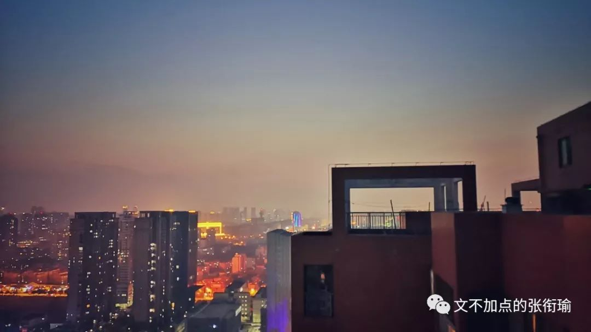

本文共计2447个字
是张衔瑜的第83篇推文
去年春节的时候 一位认识的学姐在剥洋葱people出了一期稿件 名为《春节返乡，我的猫留守在城市》 其中关于异乡人一说 我只摘出其中的一部分
写稿时忙，家里常备的速食是螺蛳粉。王小七的老家在广西桂林，她总惦记着米粉的味道，干拌的尤其好吃，还有油茶、菜花、腐竹……这些东西她觉得和外乡人用语言说不明白，反正不是他们理解的那个意思。
写完稿了她开始发愁，找谁吃饭呢？大学同学都在武汉，在北京的只有一个读研的同乡，可人家在西三环，她在东四环，中间隔着七个环。
住隔断间的日子让王小七感到压抑，她花了月租2900元租了个11平米的卧室。同在一个屋檐下，她与室友之间只互相知道名字，彼此的生活是完全隔离开，毫无交集。来实习前，在她的想象中，北京是人情味很浓的城市——大爷提着鸟笼子在胡同里遛弯儿，一条街走到头，跟每个人都打招呼。她来了之后才发现，那样的生活离自己太远了。
她感触最深的是凌晨的三里屯，从酒吧出来打不到车，只能坐夜班公交车回家。公交车上全是带着折叠电动自行车的代驾司机，刚刚开了“豪车”，或者正在去开“豪车”的路上。王小七觉得和他们一样，“这城市里，没有什么是我的。”
第二周选题会上，她说，想写三里屯这趟夜班车，其实是写异乡人。异乡人王小七怀念走在桂林街头到处都是熟人感觉。有次碰到一个不认识的阿姨，问她是不是某某的女儿，她有些惊讶，“我和我妈长得有那么像吗？”
无论在什么时候 我都会想 自己应该并且需要生活在有人情味的地方 即使在实际的不管是研究进展也好还是工作压力也好 那些问题是关于intellectual智力方面的 最好是我一个人也只能是我自己来最大地承担
但是在此之外 有些事情是没有办法一个人变成一支骑兵 单刀赴会或者千里走单骑 更何况我们拥有着良好的集体主义思想合力做大事 在一些时候 只有自己的话是没有办法的
所谓 人情冷暖 不是简简单单地鱼哭了水知道 我哭了谁知道 我也很难说清楚到底是什么样子 也许是我去北京实习或者去合肥实习的时候 实习着但是并没有给我的identified card卡片去刷开实验楼和校区的门禁 也许是在那个地方但找不到什么吃的也不能很容易找到一起吃的人 也许是我知道 过了这几天我也不会怎么留 而且别人也不想在我这里投资
当然这只是也许
甚至可以当成是某种被害似的妄想

相反地 在紫菘 如果我是在一二节和三四节的间隙去教学楼的话 逆着人流走 就算我戴着口罩在路上 也可以和那么十几拨人打招呼 大概从寝室到教学楼 一段距离里就背着包 像招财猫一样地一路say hi过去 可能是自己院系的也可能是同部门别的院系的或者其他别的奇怪的网友校友关系blah
想起朋友说在台湾交换 坐上校车后大家都会对师傅说麻烦了 然后下车去了 就再和师傅说一声谢谢 可能不一定只有这两个词 但意思就是很感谢的样子 校车师傅也不会不搭理 过来了一个同学说完之后就回一声 不会~ 像这样一直不会不会一直下去 也没有什么不耐烦
回到长沙就更不用说了 虽然我知道亲缘相近的人可能就会在相貌上八格相近然后也可能眉眼或者哪一部分很像 我觉得我在家里倒是能很容易分清楚到底哪些人是谁 应该怎么称呼
在外人看来 常年行走在小区附近地 却不止一次跟我提过你是不是那个谁家里的 或者和同学一起出去玩 虽然自己不认识但是被别人认出来了一样
我并不觉得 熟人社会一定要形成某一种特定的关系网或者舒适圈 诚然 党同伐异从表现形式上来看 和宗法制承袭下来的行为方式同宗同源 但不是说只会滋生权利腐败和兄弟阋墙 尤其在智力和专业相关的研究开拓当中 在这里面谈熟人社会 反倒是更难以进行推动和创造的不好开始
所以在硕博群体当中 这一次动摇是不是继续读PhD 主要原因也就来自于对之为人的不确定 存在疑惑和恐惧
首先在一个研究课题组的小圈子当中 没有进去之前就像围城一样 就算退一万步 有很熟悉的人在里面而且和你的价值观相近敢和你说实话 接着 在你进入这个环境了之后 你也是一个变量 你也将会影响这个环境的下一步的走向 对所有发生的一切都功不可没&罪责难逃 整天怪环境不好的 为什么都是你到了哪哪里环境就不好了呢 你就是破坏环境的人呐 况且 你进来成了一个变量 在你之后进来的人 也会成为新的变量 那就是更加不确定的了 为什么说人生如戏或者像赌博一样 这些事情都是无法预料的 功课做得再多也没有用的事情

如果我只能推荐你看一集美剧的话 我会推荐你看Rick and Morty S03E07 是一个魔幻现实的剧本 前情摘要大概就是一个不怎么靠谱的科学怪人Rick每天在各种次元无限的时间线里面追求刺激每次冒险都会拉上自己有点小怂像是被强人所难了的小外孙Morty 不过他们之前的故事和这一集都没有关系 所以收起所有的科学principle之后我安利这一集 因为真的有在说一些关于社会认知的事情
这是这一集的全部 我上传的原画视频
当然不同的人看完了之后会有不同的解读 国家的本质都还是一个阶级压迫另一个阶级的暴力政治工具 无论在rick town还是morty town 不公平 压迫 偏见 几乎是随处可见 竞选的时候才需要那些华丽的演讲 平日里 需要的是行动
饼干厂生产simple rick的确就像是交相更替以来的多种政治口号或者民众诉求 首先是说要回家 在自己家里拍vlog看到女儿的样子而记录下来的味道 或者在后来吃到了的关于自由关于liberty的味道 这其实是我之前反思我们所见到的或低级或高级breastrecreation的一个灵感来源
正如在从小以来学到的斗争历史上来看 早期领导人之所以会走上这条道路 是发现自己不过在利用一种力量去打倒另一种力量 其原本是固有存在的两种力量当中存在着博弈 然后借渺小的自己努力造势之后的结果向前推进 却不是因为自己而出面去瓦解消解了哪一方力量
荒谬的是在瑞城里面 所有的人都是一样的智商奇高 一样的年纪过着不一样的生活 最后欺骗morty town的谎言瞒不住了 因为所谓的梦想虫洞只不过是一个瑞城用来倾倒垃圾的地方 我以为这一集 不管是有我的解读还是没有我的解读都是极好的荒诞讽喻剧作
真理越辩越明 看得越来越清 一些无聊地只是供人消遣的伤痛或者开心也因此而变得无足轻重 最后还是想 如果可以的话 一定不要勉强自己而最好选择一些合适的有人情味的地方 那么 这到底是什么地方呢 我又怎么才能找到 或者怎么才能自己建造 建造了又怎么保鲜呢
事情会越想越通透
但问题却并不会因此而转移
问题只会层出不穷 对于已经驯服好了的马驹而言 也要尝试各种办法把骑在身上的你摔下去 就像你想摔下来骑在自己身上的生活一样
但要是有火锅的话
就还可以继续